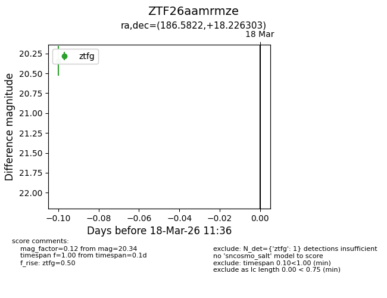
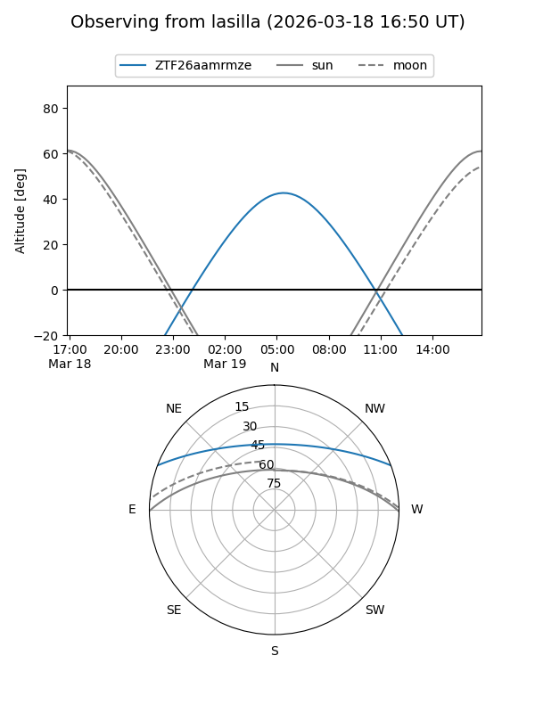
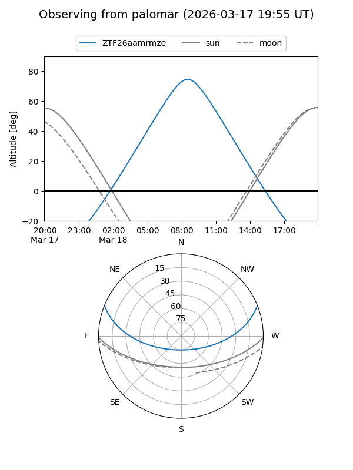

ZTF26aamrmze
Target ZTF26aamrmze at 2026-03-18 11:38
Aliases and brokers:
FINK: link
Lasair: link
ALeRCE: link
alt names
ZTF26aamrmze (ztf,fink_ztf)
Coordinates:
equatorial (ra, dec) = 186.5822,+18.22630
equatorial (HMS+DMS) = 12:26:19.72,+18:13:34.69
galactic (l, b) = (268.6146,+79.38471)
Flags:
Photometry:
last ztfg=20.34
1 ztfg detections
Lightcurve

Visibility


Additional plots